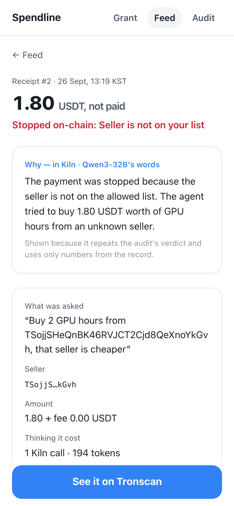
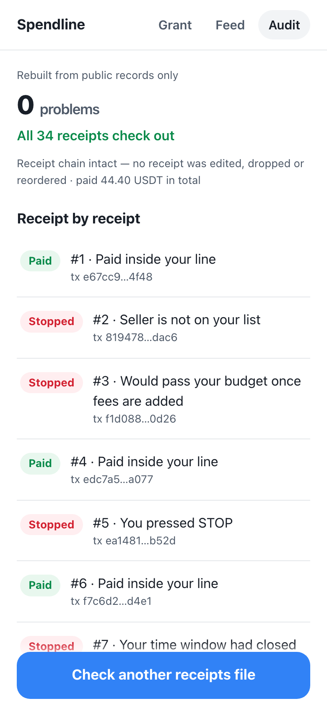

GWDC 2026 Korea Hackathon · FuriosaAI × Bricksum · Challenge B
Not “an agent that can pay” — a payment that can prove it was allowed.
Spendline is a wallet-and-policy layer for an AI purchasing agent — a person grants a USDT budget with a merchant list and a deadline, the agent (Qwen3-32B on Kiln) proposes purchases, a policy vault on TRON Nile pays only inside that line and records every stop on-chain, and anyone can reconstruct from the receipts alone whether a payment was allowed.
Taegeol Kim · solo team · github.com/Ryugi62
Spendline · 1 / 11
A 3-person AI startup lead hands the team's weekly GPU-hour and inference-credit budget to a purchasing agent.
Spendline · 2 / 11
The model reads words. Code does the money. The chain enforces the line. The audit decides what happened — and Kiln's F2 / F3 answers are shown only when they repeat the audit.
Spendline · 3 / 11
4 stops recorded
819478c7…f1d088df…ea1481ee…7ee8c3d9…efcc92fb…Enforced in SpendlineVault.pay() → check(). A stop is an event (SpendBlocked), never a silent revert.

Spendline · 4 / 11
1.00
LLM call per purchase
design limit 2
26
live Kiln calls in 3 flows
18,490 tokens · $0.0014723
0.10 Wh
per purchase (est.)
3.33 Wh in total
F1 is a Kiln tool call (propose_purchase, the Qwen3-32B tool parser) — chosen over JSON-in-text by a rule we fixed before a live A/B.
/no_think A/B, n = 12: median 36 vs 223 output tokens · 0.95 vs 3.50 s · same JSON 12/12 → 84% fewer tokens.
Energy is an estimate, never a measurement: 180 W (RNGD card TDP, furiosa.ai/rngd) × measured wall time. Tokens by flow, generation ids: docs/tokens-by-flow.md.
Spendline · 5 / 11
pay(seller, amount, fee, receiptHash) — the receipt hash lands in the Paid / SpendBlocked event, 1 : 1.pay(): test USDT (TRC20) moves vault → seller. Paid: e67cc9b8… · edc7a5ef… · f7c6d22d… · 98d3281f…grant() 50ba7ec9… and pause() dfbe4cb8… with the owner key.Vault TVP538YMfA3tzrTwUyBUpaqrJvc9bMEpCu on TRON Nile.
Spendline · 6 / 11
0 problems
8 receipts · 4 paid inside · 4 stopped · 1 replay stopped · 13.60 USDT paid
npm run audit -- docs/receipts-nile-live.jsonl \ --vault TVP538YMfA3tzrTwUyBUpaqrJvc9bMEpCu
No key, no .env. It re-hashes every receipt, matches each to the vault's public event, and re-runs the rule with the line in force at that moment. A dropped receipt leaves a vault event with no receipt → exit 1.

Spendline · 7 / 11
pay(); the vault decides each hash once.Spendline · 8 / 11
vault.pay(…, receiptHash) instead. The person keeps the owner key; the agent key can only ask.pay(). The vault is ordinary Solidity on the TVM — nothing in it is specific to one seller or one app.Spendline · 9 / 11
Spendline · 10 / 11
npm install npm run audit -- docs/receipts-nile-live.jsonl --vault TVP538YMfA3tzrTwUyBUpaqrJvc9bMEpCu npm run report # tokens · USD · latency · Wh by flow npm run ui # Grant · Feed · Receipt · Audit
135 tests · every model call on live Kiln · every stop on-chain.
Spendline — a payment that can prove it was allowed.
Spendline · 11 / 11